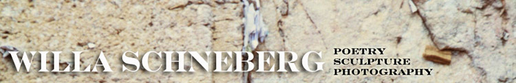
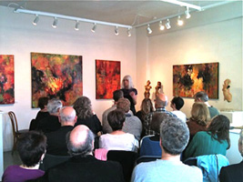
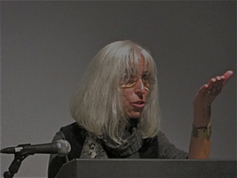
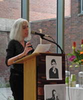
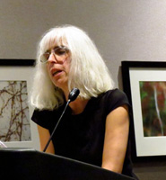

Poetry
“She writes with lyrical beauty” Jewish Review
"These are the poems of a traveler and a lover who feels both the terror of time passing and the consolation of eternity. From such tension spring lovely poetic objects, ready for intelligent use." - Andrei Codrescu
"In Storytelling in Cambodia Willa Schneberg writes a searing account of one of the darkest moments in modern history, Schneberg's haunting verse testimony, her portraits of those who dragged a once peaceful country into the nightmare of genocide, her passionate homage to an ancient culture now irrevocably lost move the reader even as they horrify." - Carolyn Forche
|
 Guardino Gallery, Portland, April 16, 2011 |
 Jewish Writers' Reading, Oregon Jewish Museum, Nov 1, 2011 |
BOOKS:
THE BOOKS OF ESTHER, limited-edition letterpress chapbook produced in conjunction with the exhibition of the same title, Paper Crane Press, Half Moon Bay, California
STORYTELLING IN CAMBODIA, Calyx Books, Corvallis, Oregon
IN THE MARGINS OF THE WORLD, Plain View Press, Austin, Texas
BOX POEMS, Alice James Books, Farmington, Maine
REVIEWS OF STORYTELLING IN CAMBODIA:
"Two Poets Grapple with Legacy of Holocaust," Eleanor Berry, Oregon State Poetry Association Newsletter, Vol. 49, No. 4, March 2007
Book Review, Lori Tsang, Multicultural Review, Spring 2007
Book Review, Judith Massee, Oregon Writers Colony Colonygram, Vol. 22, No 1, Jan / Feb 2007
Book Review, Camille-Yvette Welsch, Foreword Magazine, Nov/ Dec. 2006
"One of the ways we can fight oppression," Josephine Bridges, The Asian Reporter, Oct 10, 2006
"New Local Books," Jewish Review, Sept. 15, 2006
Book Review, B.T. Shaw, The Oregonian, July 23, 2006
SELECTED JOURNALS AND PUBLIC ART:
2014 - "Windfall: A Journal of Poetry of Place," "Mudfish," (forthcoming)
2013 - "Drash: A Northwest Mosaic," "The Portland Review"
2011 - "The Barefoot Review," "VoiceCatcher 6"
2010 - "Drash," "Poet Lore"
2009 - "Bridges: A Jewish Feminist Journal," "Poetry for the Masses," "Windfall: A Journal of Poetry of Place."
2008 - "Calyx: A Journal of Art & Literature By Women," " The Portland Alliance," Writers' Dojo (online).
2007 - "Trude Parkinson: sightings and passages," catalogue for exhibit by the painter, Art Gym, Marylhurst University, Marylhurst, Oregon. "Kyoto Journal," "Women's Review of Books"
2006 - "Bridges for Jewish Feminists and Our Friends," "Tricycle: The Buddhist Review" (online)
2005- "Mudfish,"
2004 - “The Oregonian,” “Pearl,” “Rosebud,” “The Grove Review,” “West Wind Review,”
2003 - “Chaffin Journal,” "Bridges: A Journal for Jewish Feminists and Our Friends," "Nervy Girls," "El Hispanic News," Omega (on-line publication),"
2002 - "The Oregonian,"" Fireweed," "Illuminations: An International Magazine of Contemporary Writing,"
2001 - "Blue Mesa Review," "Manzanita Quarterly,"
2000- "American Poetry Review," "Clackamas Literary Review,"
ONLINE JOURNALS:
2014 - "Muddy River Review" "VoiceCatcher"
2013 - "21st Century Text"
2011 - "The Barefoot Review"
ANTHOLOGIES:
Raising Lilly Ledbetter: Women Poets Occupy the Workplace , Lost Horse Press, 2015
Poetry from Israel and Aboard, Voices Israel Group, 2014
Alive at the Center, Pacific Poetry Project, Ooligan Press; Lit From the Inside: 40 Years of Poetry from Alice James Books, 2013
Before There Is Nowhere To Stand Palestine/Israel: Poets Respond to the Struggle, Lost Horse Press, 2012
Knocking at the Door: Approaching the Other, Birch Bench Press; Voicecatcher 6: New Writing & Art by Portland/Vancouver Area Women, A Tapestry of Voices: The Knoxville Writers’ Guild Anthology, 2011.
Voices Israel Anthology, 2010 (Volume 36)
I Go to the Ruined Place: Contemporary Poets in Defense of Global Human Rights, Lost Horse Press, 2009
Women. Period, Spinsters, Ink, 2008
Walking Bridges Using Poetry as a Compass: Poems about Bridges Real and Imagined by 70 Poets, with Directions for Five Self-Guided Explorations, Urban Adventures Press, 2007.
Poetry from Israel and Aboard, Voices Israel Group, Israel; Regrets Only, Little Pear Press. The Years Best Fantasy and Horror, 2006, Nineteenth Annual Collection
Chance of A Ghost, Helicon Nine Press, 2005.
Voices Israel Anthology, Voices Israel Group, Israel, 2005 / 2004
Knoxville Bound: A Collection of Literary Works Inspired by Knoxville, Tennessee,Metropulse Publishing, 2004
Bearing Witness: Teaching The Holocaust, Heinemann (textbook), Key West: A Collection, White Fish Press, 2001
Knowing Stones: Poems of Exotic Places, John Gordon Burke Inc., 2000
Raising Lilly Ledbetter: Women Poets Occupy the Workplace, Lost Horse Press, 2015
ESSAYS, BOOK REVIEWS & BLOG POSTS:
William Stafford Birthday Celebration Essay, presented Jan. 20, 2013, Blackfish Gallery, Portland, published in Friends of William Stafford: A Newsletter for Poets and Poetry, Spring/Summer 2013
"Why Write Poetry?: A Conversation," in conversation with Frances Payne Adler, Bridges: A Jewish Feminist Journal, Spring 2011
An Israeli Poet's Moral Reckoning," Review of J'Accuse, Aharon Shabtai,, American Book Review, March/April 2004
"A Childhood In Hell," Review of When Broken Glass Floats: Growing Up Under the Khmer Rouge, Chanrithy Him, Women's Review of Books," September, 2000
"Poetry of the Matriarchs and the Patriarchs": "Observer Quarterly," Spring 1999
"The Poet As Witness: From The Personal To The Universal": "Bridges: A Journal...," Dec. 1998
"ELEN -- Supporting Israel's Unwed Mothers: "Sojourner," June 1989
"Teshuva To Zefat": "Cincinnati Judaica Review," Spring 1994
ARTIST COLONIES
2008- Helene Wurlitzer Foundation
2004- Helene Wurlitzer Foundation, Taos, New Mexico
2003- Vermont Studio Center, Johnson, Vermont
2000 - Tyrone Guthrie Center, Annaghmakerrig, Ireland
1990 - Yaddo, Saratoga Springs, New York
1986 - MacDowell Colony, Peterborough, New Hampshire
SELECTED READINGS & TALKS
 
Oregon Jewish Museum, "Writing the Jewish Mother" Reading with workshop participants, Nov, 13, 2012
Calyx Press Celebration, read with Margarita Donnelly, Ursula K, Le Guin, Penelope Schott, Amy Schuster, Portland, Nov. 11, 2012
Memorial Reading for Adrienne Rich, Unitarian Church, Portland May 31, 2012
Split this Rock Festival: Poems of Provocation and Witness, Washington, D.C. with other contributors to I Go to the Ruined Place: Contemporary Poems in Defense of Global Human Rights, and Before We Have Nowhere to Stand, Palestine/Israel: Poets Respond to the Struggle, March 22 - 24, 2012
James Madison University with Ingrid Wend, Harrisonburg, Virginia, March 21, 2012
Rock Creek Creative Process Symposium, Portland Community College, presented with novelist Loretta Stinson and sculptor Mylan Rakich, April 14, 2011
Get Lit! Festival, participated in two panels and a reading, Spokane, Washington, April 16-17, 2010
The Montana Festival of the Book. Missoula, October 24, 2008
Wordstock Festival of the Book, Portland, November 10-11, 2007, poetry reading and workshop "Creating Poetry Through the Artist's Lens" Library of Congress, "Poetry at Noon," poems on Magic & Magicians with Adele Steiner & Nin Andrews, October 9, 2007
ArtSpring, Salt Spring Island, B.C., September 30, 2007
Carolyn Forche Reading, Poetry Downtown, Portland, March 27, 2007: Introduced the poet
Millions of Intricate Moves, 6th Annual William Stafford Symposium, Lewis & Clark College, March 3 - 4, 2007: presented about Poetry of Witness and read with Fred Marchant
Black Oak Books with Sandra Gilbert, Berkeley, Jan 12, 2007
KGB Bar, NYC, Oct. 27, 2006
Passaic County Community College, Paterson, New Jersey, April 1, 2006, Crossing Boundaries: Visual Art by Writers Reading
Oregon Jewish Museum, Portland, Nov. 3, 2005, Jewish Writers Reading
Wordstock Festival, Portland, Oregon, April 2005
Tucson Poetry Festival, April 8-9, 2005, Theme: Poetry and Painting
The Grove Review Launch Party, Feb. 2, 2005 : read with Ursula LeGuin and others
Tel Aviv University, Israel, Dec. 29, 2004, “The American Poet as Witness”
Bar Ilan University, Ramat Gan, Israel, Dec. 28, 2004, “The Persona Poem”
Clatsop Community College, Astoria, Oregon, Oct. 14, 2003: Talk “Writer as Witness”
Washington State Univ.,Vancouver, Sept.19, 2003: solo reading and opening of exhibit of clay sculpture
Laurel Theater, Sept. 4, 2003, Knoxville, Tennessee: solo reading
Oregon Book Award Authors Tour, Burns & Bend, May 1 & 2, Sept. 11 & 12, 2003
Clackamas Community College, April 22, 2003: reading with Paulann Peterson
Nye Beach Writers Series, Feb. 15, 2003: read with Gina Ochsner, 2002 Oregon Book Award in Fiction
Sanders Theater, Harvard University Oct. 5, 1991: reading with Adrienne Rich and others, benefit for "Bridges: A Journal for Jewish Feminists and Our Friends.